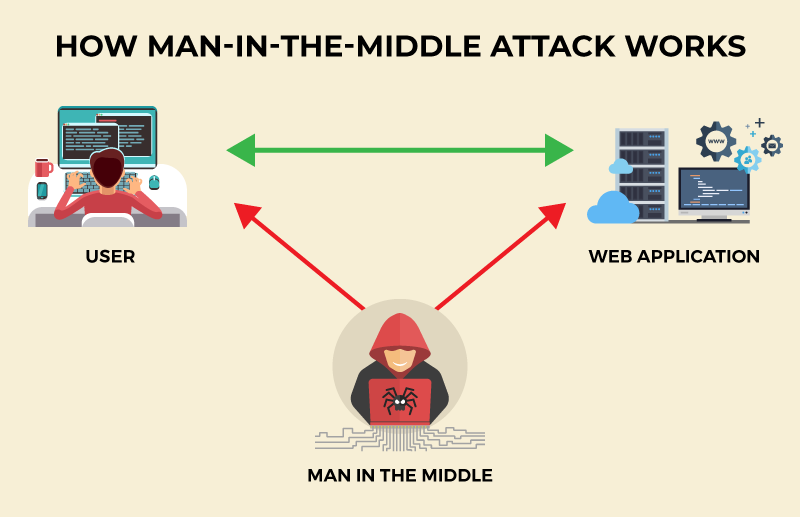

SQL Injection

Source: https://www.sitepoint.com/how-to-protect-your-website-against-sql-injection-attacks/ |
SQL injection (SQLi) is a web security vulnerability that enables an attacker to manipulate the queries that an application sends to its database. This can allow the attacker to access data that they wouldn't normally be able to see, such as data belonging to other users. The attacker may also be able to modify or delete this data, leading to lasting changes in the application's content or behavior.
Source: portswigger.net
|
Cross-Site-Scripting

Source: https://www.cloudflare.com/learning/security/threats/cross-site-scripting/#:~:text=Cross%2Dsite%20scripting%20(XSS),be%20inserted%20in%20several%20ways. |
Cross-site scripting (XSS) is an exploit where an attacker attaches code to a legitimate website that will execute when the victim loads the website. The malicious code can be inserted in several ways. The most popular methods are adding it to the end of a URL or posting it directly onto a page that displays user-generated content. In technical terms, cross-site scripting is a client-side code injection attack.
Source: www.cloudflare.com
|
Man In The Middle Attack

Source: https://threatcop.com/blog/man-in-the-middle-attack/ |
A man-in-the-middle (MITM) attack is a cyberattack where criminals use weak web-based protocols to insert themselves between entities in a communication channel and steal data. During such an attack, the parties involved in email, texting, or video calls are unaware that an attacker has infiltrated their conversation and is stealing their data.
Source: www.fortinet.com
|
Path Traversal Attack
Source: https://www.wallarm.com/what/path-traversal-attack |
Path traversal attacks, also known as directory traversal, aim to access files and directories outside the web root folder. By manipulating variables that reference files with "../" sequences or using absolute file paths, attackers may gain access to sensitive files, such as application source code or configuration. It's important to note that system-level access control limits file access, especially for locked or in-use files on the Microsoft Windows operating system.
Source: www.wallarm.com
|
Broken Access Control

Source: https://medium.com/purplebox/broken-access-control-f82235ddf888 |
Broken access control vulnerability is a critical security flaw that allows unauthorized users to access, modify, or delete data they shouldn't have access to. This occurs when an application fails to enforce access controls, enabling attackers to bypass authorization.
Source: brightsec.com
|
Cryptographic Failures
Source: https://www.freecodecamp.org/news/why-does-cryptographic-software-fail-often-d660d3cdfdc5/ |
As per OWASP, a cryptographic failure is not the cause but rather a symptom. Any failure that leads to the exposure of sensitive and critical data to an unauthorized entity can be considered a cryptographic failure.
Source: www.softwaresecured.com
|
Insecure Design
Source: https://lembergsolutions.com/blog/top-5-web-attacks-and-ways-handle-them-part-2 |
The vulnerability in this web application relates to various design-related risks that may arise. The main reason for design insecurities is the need for more profiling of business risks in the system under development. Additionally, design insecurities can occur due to the failure to define the correct level of design security required.
Source: lembergsolutions.com
|
Security Misconfiguration
Source: https://www.aquasec.com/cloud-native-academy/supply-chain-security/security-misconfigurations/ |
Security misconfiguration occurs when security settings are not properly defined to maximize security or when services are deployed with insecure default settings. This can happen in any computing system, software application, as well as in cloud and network infrastructure. Security misconfiguration is a common cause of cyber attacks and successful data breaches.
Source: www.aquasec.com
|
Vulnerable and Outdated Components
Source: https://medium.com/@razzsecu18ry/owasp-top-10-vulnerabilities-how-to-prevent-them-in-2024-1c885dc3fcb9/ |
Vulnerable and outdated components pose security risks. A vulnerable component has known security flaws, while an outdated component lacks support and security patches. Regularly update and patch these components to secure your web application.
Source: medium.com
|
Identification and Authentication Failure
Source: https://medium.com/@razzsecu18ry/owasp-top-10-vulnerabilities-how-to-prevent-them-in-2024-1c885dc3fcb9 |
An identification and authentication failure occurs when a system is unable to accurately identify and/or authenticate a user. This can happen due to reasons such as weak or easily guessable passwords, lack of strong password policies enforcement, or the absence of two-factor authentication.
Source: medium.com
|